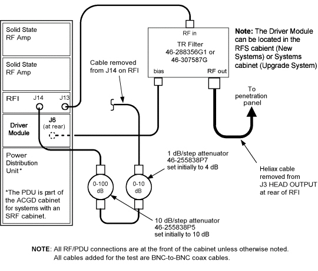
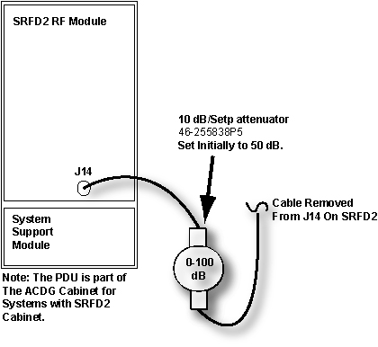
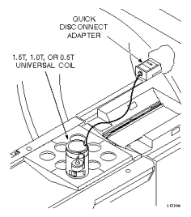
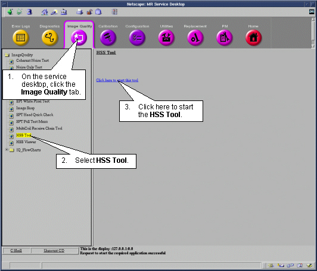
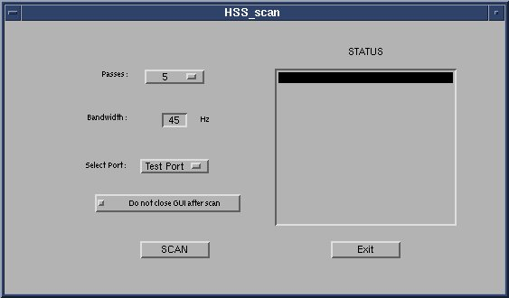
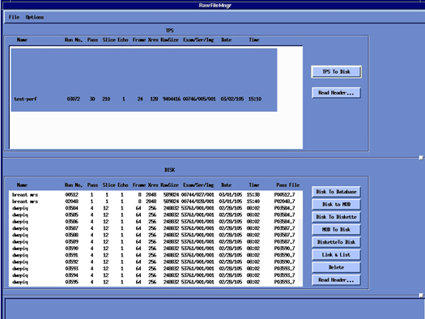

Proprietary to General Electric Company
Direction 5440000, Rev# 5
Signa HDxt Service Methods
Module Version 1.0, Version Date 5/3/07
Proprietary to General Electric Company |
| Required Persons | Preliminary Reqs | Procedure | Finalization |
|---|---|---|---|
| 1 | Not Applicable | 1.5 hours | Not Applicable |
The HSS (High Speed Stability) test evaluates the effects of vibration, or other rapid environmental or system phenomena, on the stability of the MRI process, or of the hardware used to receive and process MRI signals. For TwinSpeed, select one of the gradient coils to be used for the tests, and complete it with the same GradMode. For Help with HSS, see the following documents:
| NOTE: | HSS Viewer will automatically start once the scan (described in the procedure below) is complete. |
| NOTE: | Report Manager/ Viewer help can be obtained from the tool itself. Alternately, HSS files can be viewed by the report manager tool too. |
| Last Update | 03/04/2005 |
| Item | Qty | Effectivity | Part# | Manufacturer | |
|---|---|---|---|---|---|
| Universal Small Sample Proton Coil 1.5T, 1.0T | 1 | - | 46-320153G1(1.5T) or G4(1.0T) | - | |
| Sample Vial, 0.25M NiCl2 (green in color) | 1 | - | 46-287780G4 | - | |
| Sample Vial, 0.5M CuSO4 (deep blue color) | 1 | - | 46-287780G3 | - | |
| Base Plate | 1 | - | 46-320332G1 | - | |
| UNIVERSAL SST KIT | 1 | 1.0T | 46-320383G6 | - | |
| - | - | 1.5T | 46-320383G8 | - | |
| - | - | 3.0T | 5110731 | - | |
| Connectors Case parts: | 1 | - | 46-301042G1 | - | |
| Five Foot 50 Ohm Coaxial Cable with Male BNC Connectors | 1 | - | 46-251710G4 | - | |
| BNC "Bullet" Adapter | 1 | - | 46-220427P3 | - | |
| BNC Female to N Male Adapter | 1 | - | 46-221865P7 | - | |
| Attenuator | 1 | - | - | - | |
For SRF cabinets, the PDU is located in the ACGD cabinet; refer to Illustration 1.
For SRFD2 cabinets, refer to Illustration 2.
Illustration 1: RF/PDU OR SRF CABINET ALTERATIONS

Illustration 2: SRFD2 CABINET ALTERATIONS or RFS CABINET

This section includes both Low- and High-Frequency Bandwidth tests.
| NOTE: | Make sure the RF Amplifier is set up per RF Amplifier Setup, “RF Amplifier Setup.” |
Connect the cable from Universal 1.5T or 1.0T SST RF coil to the proper adapter.
| NOTE: | For 1.5T, use Extremity Coil/Linear Head Coil Adapter or 1.5T Service Tool Interface; for 1.0T, use the Service Tool Interface Adapter. |
Insert the proper sample vial into the coil.
| NOTE: | Use 0.25M NiCl2 (green in color) for low-bandwidth mode (to test for vibration disturbance). |
| NOTE: | Ensure no solution is trapped in the top section of the vial before inserting the vial into the coil. If solution is trapped in the vial top, correct by flicking the vial with your finger to knock the solution to the bottom of the vial. |
| ||||
| SAMPLE MOTION CAN AFFECT HSS OUTPUT. TO ENSURE THE VIAL FITS SNUGLY INTO THE COIL HOUSING, A PIECE OF TAPE CAN BE WRAPPED COMPLETELY AROUND THE VIAL BEFORE PLACING INTO THE HOLDER. | ||||
Disable the TNS.
Position the base plate at the head end of cradle. Place and lock the coil into the base plate in the corner; then connect the adapter to the head carriage (see Illustration 3).
Illustration 3: COIL PLACEMENT

Landmark on the center of the base plate. The Coil / Sample should be off the iso-center in all 3 planes.
At the MR Service Desktop, start HSS Tool as shown in Illustration 4.
Illustration 4: SELECTING HSS TOOL FROM UTILITIES

If this system has an SRFD2 Cabinet or RFS Cabinet, as show in Illustration 2, then Click on the [Select Port] Pull down and select [Head Port] as shown in Illustration 5.
Illustration 5: Selecting Head Port if SRFD2

If this system has an SRF cabinet, as shown in Illustration 1, leave the [Select Port] selection defaulted to [Test Port] as shown in Illustration 6.
Illustration 6: Select Test Port is SRF

Select [Scan] From the HSS GUI
The prescan and scan will be done automatically. No user scan setup is required. The scan will take a few minutes to complete.
After the scan is finished the HSS Viewer will automatically start. Please see the Viewing Results for instructions concerning how to display the results.
Restore the connections at the back of the RF cabinet (refer to RF Amplifier Setup initial setup.
Remove all SST Coil hardware (coil, test cables, etc.) from the bore.
Go to the Utilities menu – select Raw File manager – and click as shown in Illustration 7 to start the tool. A screen similar to the one as shown in the Illustration 8 will pop up.
Illustration 7: Restoring Locked Raw File Capacity

Illustration 8: Raw File Manager Screen

Under the DISK heading, highlight the HSS files, and click on [Delete].
Perform at least one head scan to verify proper system operation. For TwinSpeed, repeat for each gradient mode.